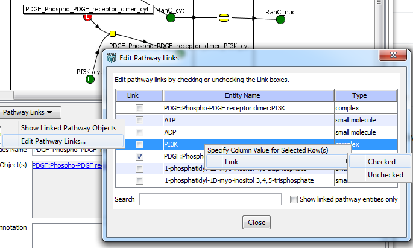

Objects in Physiology (species and reactions) and pathway entities in Pathway Model can be linked. The linked objects are marked with a letter 'L'.
Selecting a single species or a single reaction in a Reaction Diagram, Reactions Table View or Species Table view enables Pathway Links button.
If a species or reaction is already linked to a pathway object, there are multiple ways to see Linked pathways objects.
Editing Pathway Links. The user can link/unlink every species and reaction to an
every physical entity and interaction in Pathway model.
Selecting Pathway Links -> Edit Pathway Links... will start a dialog box with the list of
all objects that can be linked
(physical entities for a species or interactions for a reaction). The user can create new links or deleted existing links by checking/unchecking
checkboxes in the dialog. As usual, Search field is provided for easy filtering.
